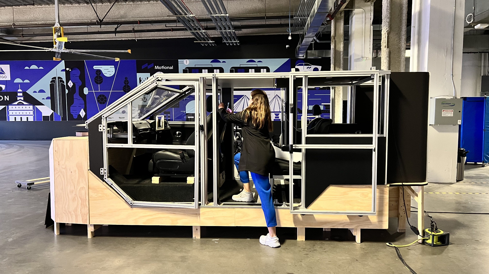
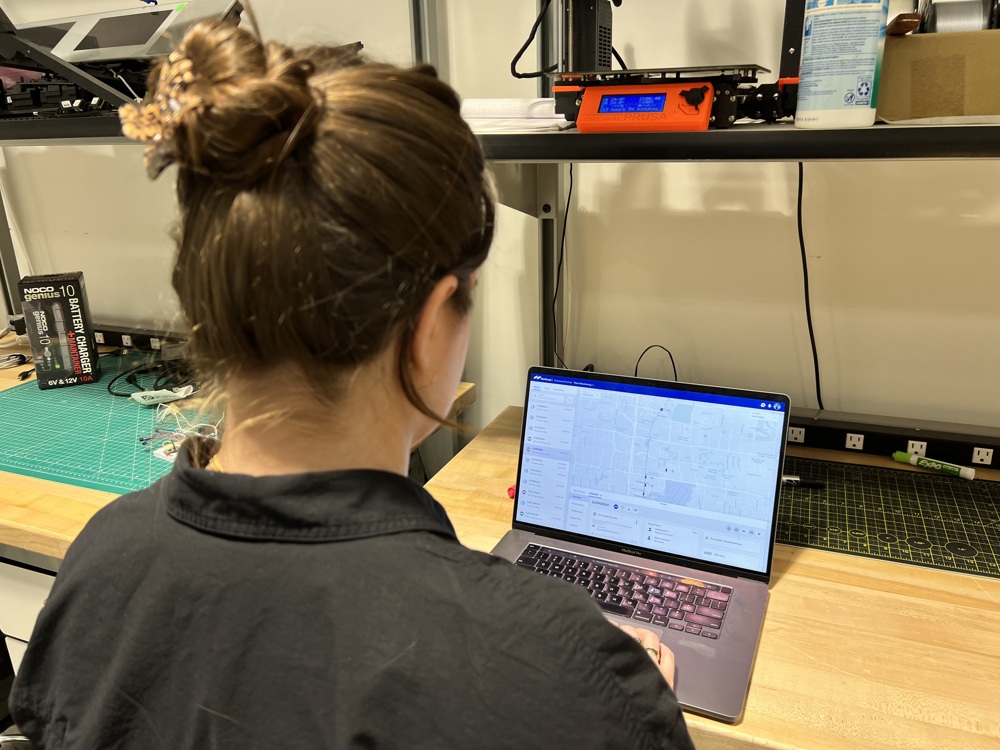
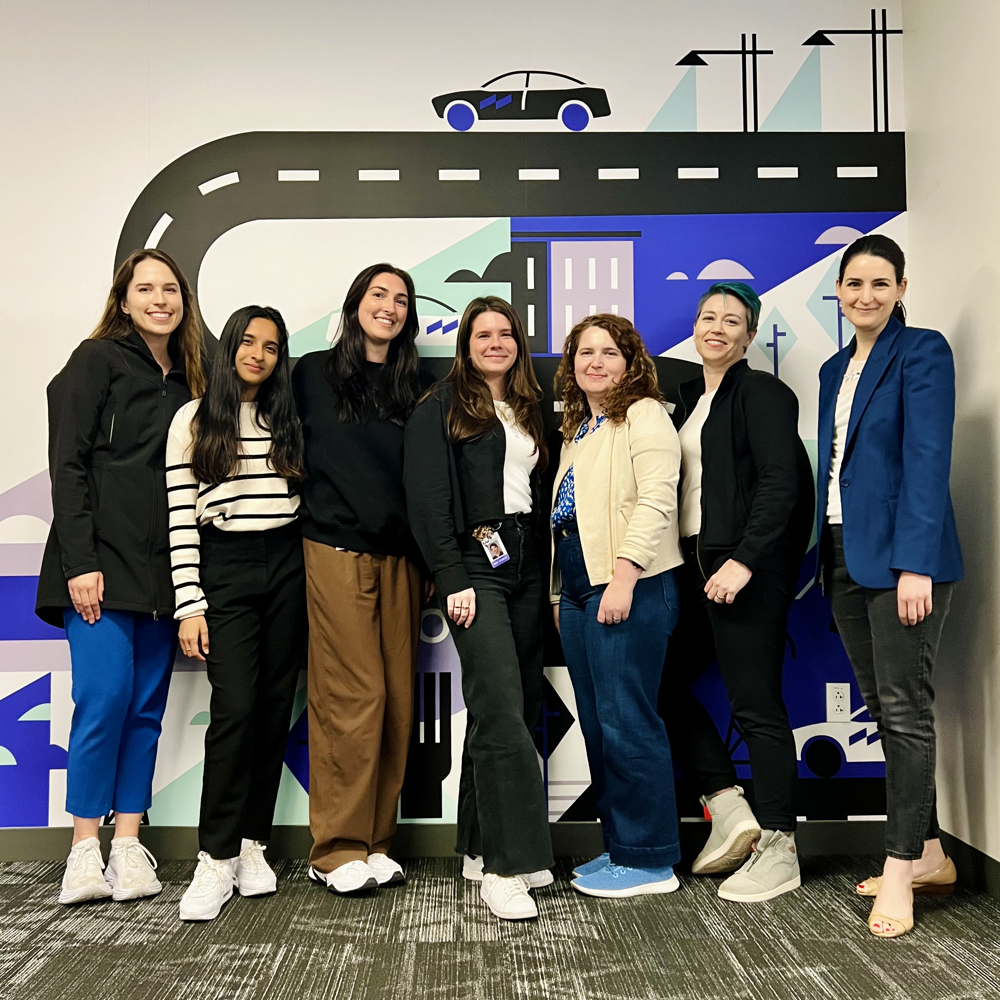

Overview
Fleet Monitoring became a vital tool for operations teams managing autonomous vehicles. Through extensive user research and cross-team collaboration, I established a new design system while leading the design of key features.

Redesigned the Command Center's Fleet Monitoring tool used by operations teams to manage autonomous vehicle fleets, establishing a new design system and leading key feature development.
Sr. Product Designer
User Research, Design System Creation, Feature Leadership
March 2021 - 2023
Command Center Team at Motional
Critical ops tool
Manages entire AV fleet in real-time
Tight knit team
Worked with one lead designer, one researcher, one project managager, and multiple engineers
Note: Due to confidentiality agreements, I've limited the details of this project to a broad overview of my role and impact.
Fleet Monitoring became a vital tool for operations teams managing autonomous vehicles. Through extensive user research and cross-team collaboration, I established a new design system while leading the design of key features.

Conducted extensive user research with operations teams to understand their workflow, pain points, and needs. Regular testing sessions ensured the design met real-world requirements.

The tool is used daily by operations teams to monitor vehicle health, track fleet status, and respond to issues in real-time across multiple locations.

One of the highlights of working at Motional was being part of a team with such a strong representation of women in tech. It was inspiring to collaborate with talented female engineers, designers, and leaders who brought diverse perspectives and innovative solutions to complex autonomous vehicle challenges. This inclusive environment fostered creativity and excellence across the organization.

If you'd like to learn more about this project or discuss collaboration opportunities, feel free to reach out!